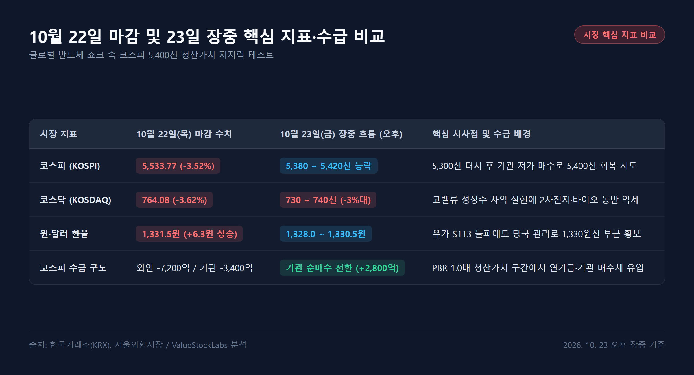
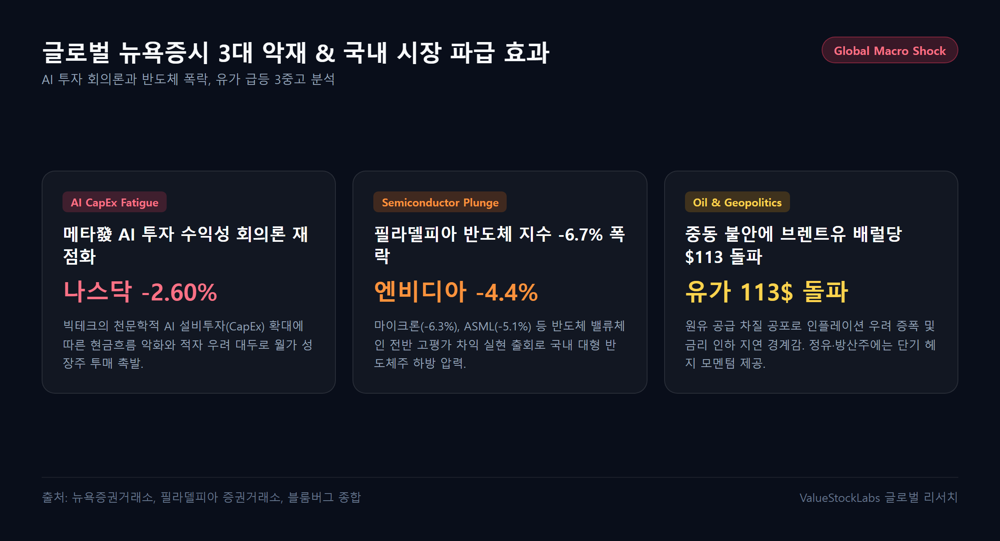
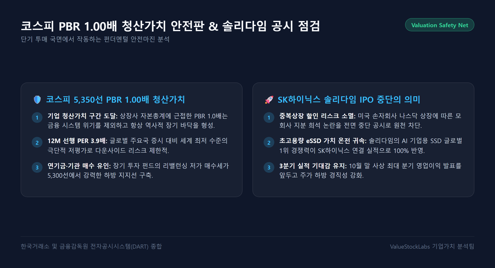
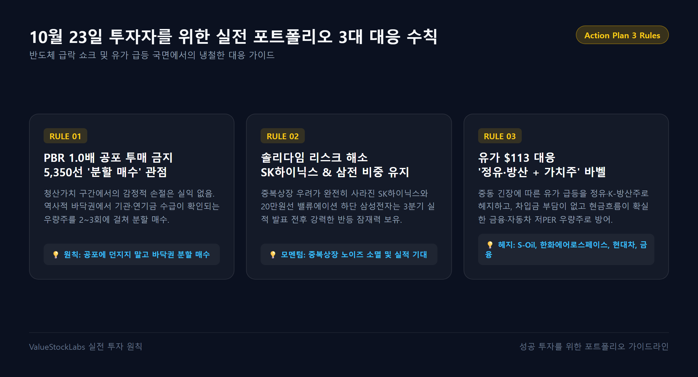

1. 글로벌 반도체 쇼크와 23일 코스피 5,400선 청산가치 사수 총평
10월 22일(목) 국내 증시는 대외 변동성 확대로 코스피가 -201.89포인트(-3.52%) 급락한 5,533.77로 마감한 데 이어, 10월 23일(금) 오늘 아침 개장 직후에도 극심한 하방 압력을 받았습니다. 간밤 미국 뉴욕증시에서 빅테크의 AI 투자 수익성 회의론과 함께 필라델피아 반도체 지수가 무려 -6.70% 폭락한 충격이 고스란히 국내 시장을 덮쳤기 때문입니다.
코스피는 개장 초 단숨에 5,300선까지 밀려나며 연중 최저 수준을 위협받았습니다. 그러나 장중 지수가 급락하자 연기금과 기관 투자자를 중심으로 "코스피 PBR 1.0배 구간은 장부상 청산가치에 도달한 절대적 저평가 영역"이라는 인식이 확산되며 약 2,800억 원 규모의 강력한 저가 순매수세가 유입되었습니다. 이에 따라 지수는 낙폭을 점진적으로 축소하며 현재 5,400선 안착을 위한 치열한 공방전을 벌이고 있습니다.

| 시장 지표 | 10월 22일(목) 마감 수치 | 10월 23일(금) 장중 흐름 (오후) | 핵심 배경 및 시사점 |
|---|---|---|---|
| 코스피 (KOSPI) | 5,533.77 (-3.52%) | 5,380 ~ 5,420 pt (5,400선 회복 시도) | 5,300선 터치 후 기관 저가 매수로 낙폭 축소 |
| 코스닥 (KOSDAQ) | 764.08 (-3.62%) | 730 ~ 740 pt (-3%대 약세) | 성장주 밸류에이션 압박 속 2차전지·바이오 조정 |
| 원·달러 환율 | 1,331.5원 (+6.3원 상승) | 1,328.0 ~ 1,330.5원 (안정세) | 유가 113달러 급등 영향 불구 1,330원선 횡보 |
| 코스피 수급 구도 | 외인 -7,200억 / 기관 -3,400억 | 외인 매도 지속 / 기관 순매수 전환 | 기관·연기금의 PBR 1.0배 청산가치 매수세 유입 |
2. 글로벌 매크로 분석: 필라델피아 반도체 -6.7% 폭락과 유가 113달러 돌파의 파장
간밤 뉴욕증시는 인공지능(AI) 인프라 투자 사이클을 둘러싼 시장의 시각이 '환호'에서 '수익성 검증'으로 급변하며 기술주 전반에 거센 투매가 쏟아졌습니다.
- 다우존스30 산업평균지수: 52,866.52 (+0.02%) 전통 가치주 선방 속 강보합 마감
- S&P 500 지수: 7,663.22 (-1.21%)
- 나스닥 종합지수: 26,009.68 (-2.60%) 지난 6월 이후 최대 일일 낙폭 기록
- 필라델피아 반도체 지수: -6.70% 폭락 (엔비디아 -4.4%, 마이크론 -6.3%, ASML -5.1%)

이번 글로벌 시장 충격의 원인은 크게 세 가지로 분석됩니다:
(1) 메타(Meta)發 AI CapEx 회의론
메타 등 빅테크 기업들이 시장 예상치를 웃도는 3분기 실적을 발표했음에도 불구하고, 내년도 AI 설비투자(CapEx) 규모를 천문학적으로 확대하겠다고 발표하면서 시장의 불안을 자극했습니다. 막대한 자본 지출 대비 단기 잉여현금흐름(FCF)이 급격히 둔화되고 적자 전환 가능성까지 거론되자, 월가에서는 "AI 투자 수익 회수 시점이 너무 늦어지는 것 아니냐"는 회의론이 확산되었습니다.
(2) 반도체 밸류체인 전반의 고평가 차익 실현
그동안 AI 랠리를 이끌어왔던 엔비디아(-4.4%), 마이크론(-6.3%), 브로드컴(-5.8%) 등 핵심 하드웨어 종목들이 일제히 차익 실현 매물에 밀리며 필라델피아 반도체 지수가 -6.7% 폭락했습니다.
(3) 중동 지정학적 위기 고조와 브렌트유 배럴당 113달러 돌파
중동 지역 분쟁이 격화되면서 원유 공급 차질 불안감이 최고조에 달했고, 브렌트유 선물 가격이 배럴당 113달러를 돌파했습니다. 유가 급등은 인플레이션 압력을 높여 미국 연방준비제도(Fed)의 향후 금리 인하 속도를 늦출 수 있다는 우려를 자아냈습니다.
3. 핵심 이슈 팩트체크: SK하이닉스 솔리다임 IPO 중단 공시와 삼성전자 20만 원 지지선
시장의 거센 폭풍우 속에서도 국내 반도체 투톱은 독자적인 방어 논리를 구축하며 하방 경직성을 확보하고 있습니다.
(1) SK하이닉스: 미국 손자회사 솔리다임 IPO 전면 중단 긴급 공시
오늘 오전 가장 결정적인 뉴스는 SK하이닉스의 솔리다임 기업공개(IPO) 및 프리IPO 추진 검토 전면 중단 공시였습니다.
- 배경: 그동안 시장에서는 솔리다임이 나스닥에 상장될 경우 모자회사 '중복 상장'에 따른 모회사 주주가치 희석과 지분 디스카운트를 강하게 우려해 왔습니다.
- 효과: 이번 상장 철회 결정으로 지분 희석 우려가 완벽히 소멸되었습니다. 솔리다임이 보유한 초고용량 QLC 기반 기업용 SSD(eSSD) 글로벌 1위 경쟁력과 가치가 온전히 SK하이닉스의 연결 실적으로 귀속됨에 따라, 미 반도체 폭락장 속에서도 120만 원대 초반 지지력을 탄탄하게 방어하는 핵심 모멘텀이 되고 있습니다.
(2) 삼성전자: 20만 원선 안착과 PBR 1.1배 밸류에이션 매력
삼성전자는 전일 202,500원(-4.03%) 마감 이후 오늘 장 초반 20만 원 선을 위협받았으나, 기관과 연기금의 집중적인 방어 매수세가 유입되며 20만 원 선을 지켜내고 있습니다. 12M Fwd PBR 1.1배는 삼성전자의 역사적 밸류에이션 하단으로, 10월 말 확정 실적 발표와 HBM4 공급 가시화가 다가올수록 강력한 주가 반등의 스프링보드가 될 전망입니다.
4. 코스피 밸류에이션 점검: 12M Fwd PBR 1.00배 역사적 바닥 구간의 안전마진
주식 시장에서 단기 공포가 극에 달했을 때 냉정하게 바라보아야 할 지표는 바로 기업의 순자산 가치(청산가치)입니다.

현재 코스피 5,300~5,400선은 다음과 같은 절대적 안전마진을 보유하고 있습니다:
- 12M Fwd PBR 1.00배 도달: 지수 5,350~5,400선은 상장 기업 전체를 당장 청산했을 때의 순자산 가치(BPS)와 주가가 정확히 1:1로 일치하는 구간입니다.
- 역사적 경험칙: 2008년 글로벌 금융위기, 2020년 팬데믹과 같은 금융 시스템 붕괴 상황이 아닌 일반적 경기 사이클 조정에서 PBR 1.0배는 언제나 장기 대세 상승의 시발점이었습니다.
- 12M Fwd PER 3.9배: 전 세계 주요 증시 중 최저 수준의 멀티플을 기록하고 있어 밸류에이션 매력이 극대화되었습니다.
5. 10월 23일 투자자를 위한 실전 대응 3대 수칙
변동성이 극에 달한 금요일 장세에서는 공포에 질린 뇌동매매를 멈추고 냉철한 전략으로 대응해야 합니다.

수칙 1. PBR 1.0배 구간 공포 손절 금지, 5,350선 전후 '우량주 분할 매수'
청산가치 구간에서의 감정적 패닉 셀링은 손실을 바닥에서 확정 짓는 최악의 선택입니다. 지수 5,350~5,400선 전후에서는 실적 가시성이 검증된 대형주를 2~3회에 걸쳐 분할 매수하는 역발상 접근이 유효합니다.
수칙 2. 중복상장 노이즈 해소된 SK하이닉스 & 실적 호전주 압축
솔리다임 IPO 철회로 지분 가치가 온전히 보존된 SK하이닉스와 20만 원 지지선이 탄탄한 삼성전자는 10월 말 3분기 실적 발표 전후로 주도권을 되찾을 것입니다. 반도체 비중을 안정적으로 유지하십시오.
수칙 3. 유가 113달러 대응: '정유·방산' 헤지와 '저PER 가치주' 바벨 전략
국제유가 급등에 따른 인플레이션 변동성을 헤지하기 위해 정유(S-Oil 등)와 K-방산(한화에어로스페이스 등)을 일부 담고, 현금흐름이 견고하고 배당 매력이 높은 금융·자동차 우량주를 결합하는 바벨 전략으로 계좌의 안정성을 극대화하십시오.